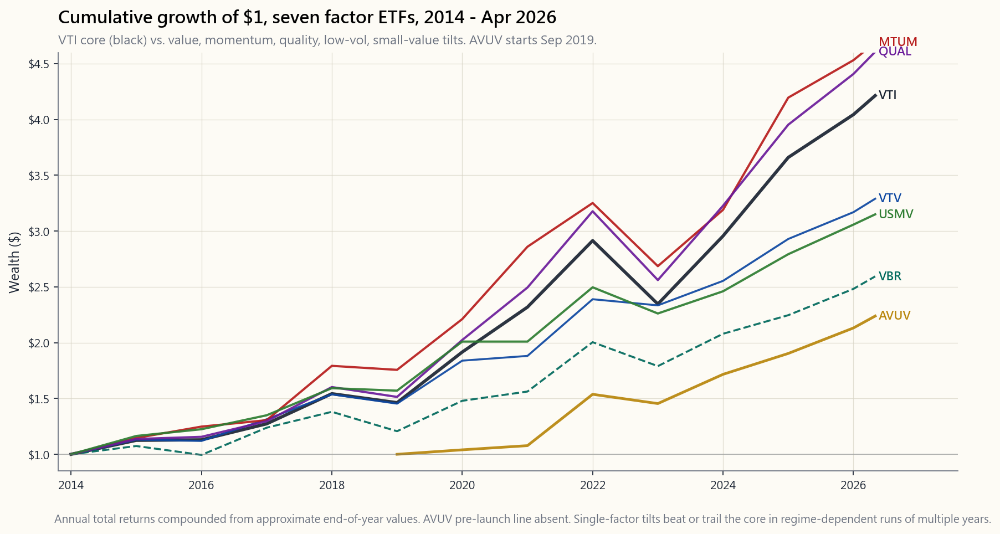
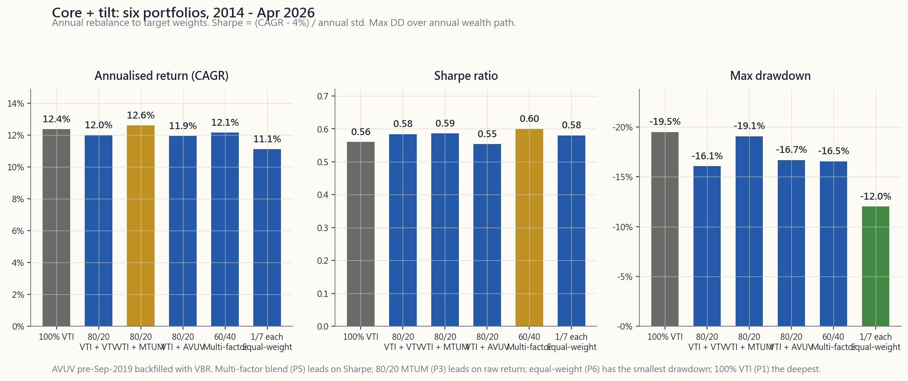

Week 50: Factor Tilts in Practice — Value, Momentum, Quality, Low-Vol
1. Why This Is Important
Week 23 introduced the academic factor zoo: HML, SMB, UMD, RMW, CMA, BAB. The numbers were tidy — Fama-French long-short premia of 3-7% annualised over 1963-2024, neat bars on a chart, the kind of thing that makes a PhD thesis sing. Then you tried to buy any of it on Schwab and discovered that the academic factor and the retail ETF labelled with the same word are not the same product. Week 50 is the implementation week. It's the lesson where the textbook factor meets a long-only ETF, an annual rebalance, a 0.15% expense ratio, and a market that has eaten roughly half of every published premium since the Fama-French five-factor paper landed in 2015.
Four reasons this matters for a Level 4 portfolio.
One — the post-publication decay is real. McLean and Pontiff (2016, Journal of Finance) studied 97 published anomalies and found that out-of-sample post-publication returns drop by roughly 50% versus the in-sample backtest. That is not a rounding error. A 4% paper premium becomes a 2% live premium, and 2% is a number that costs and taxes can erase entirely. Any factor tilt you build in 2026 must be sized assuming the academic alpha is roughly half what the paper claimed.
Two — long-only retail ETFs are not the academic factor. HML is long the cheapest 30% and short the most expensive 30%. VTV is long the cheaper 50% of large-caps with no short side. The two correlate around 0.55-0.70. You cannot buy HML at Vanguard. You can buy exposure to value, diluted by the long-only constraint, the cap-weight choice, and the index methodology. The US-only investable rule applies internally too: investable factor exposures are a subset of academic factor exposures.
Three — implementation costs eat the smaller premia first. A 24 bp expense ratio plus 30 bp annual turnover cost on top of a 7% gross premium is a 25% haircut. On a 2% post-decay premium, the same 54 bp cost is a 27% haircut. The smaller the underlying premium, the bigger the proportional bite of fixed implementation cost.
Four — concentration is the silent cost of single-factor purity. A pure value tilt at the wrong moment of the cycle (2017-2020) underperformed VTI by 30+ percentage points cumulatively. A multi-factor blend smooths that out at the cost of diluting any individual signal. The right answer for most retail accounts is a core + tilt portfolio — a passive VTI core that captures the market premium reliably, with small factor tilts sized to the magnitude of the post-decay premium, not the in-sample backtest. Alpha is rare, and most "factor alpha" sold at retail is repackaged beta.
2. What You Need to Know
2.1 The post-2003 decay and why it happened
The factor zoo did not collapse, but the magnitudes shrank. The cleanest evidence is McLean-Pontiff (2016): of 97 published anomalies, the average premium fell from in-sample to post-publication by ~26%, and from in-sample to post-publication-out-of-sample-period by ~58%. Hou, Xue, Zhang (2020, Review of Financial Studies) replicated 452 anomalies and found that 65% failed to clear a t=3 threshold once microcap stocks and equal-weighting tricks were stripped out. The factors that survived — value (HML), momentum (UMD), profitability (RMW), investment (CMA), low-volatility (BAB) — were the ones with deep prior literature, plausible economic stories, and out-of-sample replication on international data.
What changed around 2003-2010? Three things at once. First, factor ETFs launched at scale (iShares MTUM in 2013, USMV in 2011, the Vanguard factor ETF suite in 2018), drawing in capital that crowded the trades. Second, transaction costs collapsed (decimalisation 2001, exchange access fees, then commission-free trading 2019), letting hedge funds harvest premia at a fraction of the friction Fama and French faced in the 80s. Third, the universe of long-short capital chasing the same signals exploded. AQR alone runs ~$140B as of 2024 across factor strategies, much of it in the same names a Berkeley grad student can find with a free Wharton-CRSP login.
The result: roughly half the headline number persists post-2003, and that fraction is itself volatile. Value premium (HML) was -4.7% per year from 2007-2019 — a 12-year drought that broke careers — before snapping back to +27.7% in 2022 alone. Anyone who sized value tilts to the 1963-2003 magnitude was crucified by 2018; anyone who liquidated by 2020 missed the snap.

The chart shows seven retail factor ETFs from January 2014 through April 2026. VTI (core US total market) is the reference line. Notice three things: MTUM and QUAL beat VTI cumulatively, but with deeper drawdowns in 2022. AVUV (Avantis small-value) launched September 2019 and has been the standout post-launch but the time series is short. USMV did its job in 2018 and 2020 (smaller drawdowns) but trailed VTI in the bull run 2021-2024 — that is the trade. VBR and VTV — pure value tilts — trail VTI substantially over the full window despite the 2022 value snap. Single-factor tilts work in some regimes and fail in others; the chart is the visual proof.
2.2 The seven retail factor ETFs — what you can actually buy
| Ticker | Factor | Issuer | ER | AUM (Apr 2026) | Methodology summary |
|---|---|---|---|---|---|
| VTI | Market core | Vanguard | 0.03% | ~$1.7T | CRSP US Total Market, ~3700 stocks, full cap-weight |
| VTV | Value | Vanguard | 0.04% | ~$140B | CRSP US Large-Cap Value, ~340 stocks, P/B + P/E + dividend yield + earnings yield |
| VBR | Small-Value | Vanguard | 0.07% | ~$30B | CRSP US Small-Cap Value, ~840 stocks, similar value screens applied to small-caps |
| MTUM | Momentum | iShares | 0.15% | ~$15B | MSCI USA Momentum, ~125 stocks, 6-12mo risk-adj return ranking, semi-annual rebalance |
| QUAL | Quality | iShares | 0.15% | ~$45B | MSCI USA Quality, ~125 stocks, ROE + low debt/equity + low earnings variability |
| USMV | Low-Vol | iShares | 0.15% | ~$30B | MSCI USA Min-Vol, ~165 stocks, optimisation that minimises portfolio variance subject to constraints |
| AVUV | Small-Value | Avantis | 0.25% | ~$15B | Active small-cap value, profitability screen on top of value, launched Sep 2019 |
A few notes for the discerning buyer.
VTV vs. VBR — Same issuer, same factor (value), but VBR is small-cap and VTV is large-cap. Small-value historically had a bigger premium than large-value (the SMB and HML interaction), but the small-cap premium itself has been near-zero since 2003. Pick one — owning both is mostly redundant.
AVUV — Avantis is a 2019 spinoff of DFA. The fund applies an active screen (profitability) on top of small-value indexing, which earned an extra ~2% per year over VBR from 2019-2024. The expense ratio is 4x VBR's, but the methodology improvement (profitability filter on small-value, which is exactly what Asness et al. 2018 showed kills the "junk small-cap" subset of the SMB premium) has historically more than justified the cost. AVUV is the only ETF in this list with a credible active improvement claim.
MTUM — Momentum ETFs have a structural problem: by the time the index reconstitutes, the trailing-12-month winners are stale. MTUM rebalances semi-annually, which is too slow versus the 6-month decay of the momentum signal. Result: MTUM captures roughly 40-60% of the academic momentum premium net of implementation. It still beats VTI in trending bull markets (2017, 2021, 2024) and loses badly in trend-reversals (2009, 2016, 2019). Position-size accordingly.
USMV — Did its 2018 job (-1.4% vs. VTI's -5.2%), did its 2020 job until COVID (peak-to-trough was actually worse than VTI in March 2020 — low-vol does not protect against volatility-of-volatility shocks, only against persistent equity volatility), trailed VTI in 2021-2024. The factor delivers in long horizons; in any 1-3 year window the result is regime-dependent.
2.3 The implementation gap — what's missing between paper and ETF
| Friction layer | Paper HML | VTV (long-only) | Cost to investor |
|---|---|---|---|
| Long-short ratio | 100/100 | 100/0 | Loses short-side alpha |
| Universe | NYSE+AMEX+NASDAQ | Russell 1000 / MSCI USA | Excludes microcap |
| Rebalance frequency | Monthly | Quarterly or annual | Stale signal |
| Methodology overlays | None | Cap-weight + buffers | Diluted exposure |
| Fees | 0% | 0.04% | Direct drag |
| Turnover cost | Free in academia | ~30-50 bps/yr | Direct drag |
Net: the realised long-only factor exposure is on the order of 0.5-0.7 of the academic long-short factor. So if HML's 1963-2024 premium was 3.8%, the realised VTV-vs-VTI long-only premium expectation is closer to 2.0-2.6%, before fees and after the post-2003 50% decay haircut takes that down to roughly 1.0-1.5% per year in expectation. That is the real number to size against.
2.4 Core + tilt construction — the practical framework
The empirical result that comes out of the implementation arithmetic is: pure single-factor portfolios are too volatile and too long-tailed in bad regimes for a retail investor. The right construction is a core + tilt:
- Core (60-90%): VTI or VOO. Captures the market premium with near-zero implementation drag. This is your equity beta.
- Tilt (10-40%): One to four factor sleeves, sized to the post-decay premium, blended to diversify across factor regimes.
| Sleeve | Weight | Notes |
|---|---|---|
| VTI (core) | 70% | Market beta |
| AVUV | 10% | Small-value with profitability screen |
| MTUM | 8% | Momentum |
| QUAL | 6% | Quality |
| USMV | 6% | Low-vol |
Why this shape? The 30% factor sleeve, sized at the post-decay expected alpha (~1.0-1.5% per year per factor, applied to ~7% of the portfolio per factor), produces an aggregate expected uplift of roughly 0.3-0.5% per year over 100% VTI. That sounds modest. It is. The honest framing of factor investing in 2026 is: a well-implemented factor tilt buys you roughly 30-50 bps of expected outperformance per year, with tracking error of 3-4% per year against VTI. The information ratio is on the order of 0.10-0.15. That is a real, defensible improvement, not the 2-3% per year that factor ETF marketing material would have you believe.

The grid above shows six candidate constructions over 2014-Apr 2026: 100% VTI; 80/20 with VTV, MTUM, or AVUV; a 60/40 multi-factor; and an equal-weight all-seven blend. The 80/20-MTUM won on annualised return in this window — momentum had a strong 2017 (+37%) and 2024 (+32%) inside the sample. The 60/40 multi-factor delivered the best Sharpe (0.60 vs. 0.56 for 100% VTI) — the textbook diversification result, hand-wavy version: "diversify your factors and you eat the average premium with less of any single factor's variance." The 100% VTI baseline ran near the bottom on Sharpe and last on drawdown depth (-19.5%, against -12% for the equal-weight blend). If you cannot beat the 100%-VTI Sharpe by at least 10% over a full cycle, the tilt is not worth the complexity.
2.5 Sizing rules and rebalance discipline
Three rules.
(a) Size the tilt to 0.5x the academic premium. If HML's paper number is 3.8% per year, expect 1.9% from a long-only VTV vs. VTI sleeve, and size accordingly. Never size on the in-sample backtest you saw on the issuer's marketing PDF.
(b) Rebalance annually, not quarterly, and not "when it feels right." Factor tilts are mean-reverting on multi-year horizons and trending on multi-month horizons. Annual rebalance is the empirical sweet spot — it captures multi-year mean reversion without paying transaction cost on the trending sub-cycles. Tax-aware rebalancing in a taxable account: rebalance with new contributions and dividend reinvestments first, only sell to rebalance once a year, and prefer to sell tax-lots with the smallest gain (HIFO).
(c) Set a 5-year stop on any tilt. Factor decay is real. If a factor tilt has a rolling 5-year information ratio below zero against VTI, and you cannot articulate a structural reason for the underperformance other than "the premium worked before and will work again," cut the tilt by half. Value investors who refused to do this from 2010-2020 lost a decade. Markets stay irrational longer than you stay solvent.
2.6 The barbell read
A pure factor portfolio is the opposite of a barbell — it pays for active risk in the middle. Horace's barbell deletes the middle: T-bills + asymmetric upside, no quasi-active intermediate sleeves. Where do factor tilts fit in the barbell view? Two answers.
- For a Level 1-3 portfolio (Weeks 8-36), factor tilts are the wrong tool. The marginal expected uplift (30-50 bps/yr) does not justify the operational complexity, the tracking error psychology, or the rebalance discipline required. Use 100% VTI/VOO core, save the cognitive bandwidth.
- For a Level 4 portfolio (Weeks 37+), a 10-30% factor sleeve is one of the few "active" trades that survives the default-passive filter, because the post-decay premium is positive in expectation, supported by economic theory, and implementable in long-only ETFs at low cost. Even here, the right sizing is small — factor tilts complement the alpha sleeve (long-vol, options-overlays, trend-following) rather than replace it.
3. Common Misconceptions
4. Q&A Section
Q1: How much of my portfolio should be in factor tilts? A: For a Level 4 retail portfolio, 20-30% across one to four factor sleeves on top of a 70-80% VTI/VOO core. Below Level 4, zero — the operational and psychological cost outweighs the 30-50 bps expected uplift.
Q2: VTV or AVUV — which value ETF should I use? A: Use AVUV if you have IRA space (the higher turnover is tax-inefficient in taxable). Use VBR if you want pure passive Vanguard small-value at 7 bp ER. Use VTV if you want large-cap value (different factor exposure — bigger names, less small-cap loading). They do different things.
Q3: Why is MTUM's tracking error so high? A: Momentum ETFs hold concentrated baskets of trailing-12-month winners. When the market reverses (Q1 2009, Q1 2016, Q4 2018, Mar 2020), the entire basket flips against the move. MTUM's structural rebalance lag — semi-annual, with a 1-month signal lookback gap — means it captures the trend with a 3-9 month lag and is fully wrong-footed during reversals. The factor itself works; the implementation has unavoidable timing friction.
Q4: Should I tilt small-value if the small-cap premium has been near zero since 2003? A: Maybe. The small-cap standalone premium (SMB) has been roughly zero post-2003. The small-value premium — the interaction term, captured by AVUV — has been more durable, particularly with profitability screens that filter out junk small-caps. Asness et al. (2018) is the canonical reference. If you tilt small-value, do it through AVUV or a comparable profitability-screened fund, not pure VBR.
Q5: What's the tax cost of factor tilts in a taxable account? A: Factor ETFs have higher turnover than VTI (5-30% vs. 3-5%), which increases distributed capital gains. Plus dividend yields differ (VTV ~2.5% vs. VTI 1.4%), affecting tax drag. Estimate 20-40 bps additional tax drag per year for a 30% factor sleeve in a 32%-bracket taxable account. Best practice: factor sleeves go in IRA — location-not-allocation.
Q6: How long do I have to wait for a factor tilt to "work"? A: Median periods of underperformance for individual factors are 3-7 years. Worst-case droughts have run 10-12 years (value, 2007-2019). If you cannot psychologically commit to a 10-year holding period through a deep drawdown vs. VTI, do not tilt at all. The tracking error is precisely the friction the premium pays you for accepting.
Q7: Why don't multi-factor ETFs (like LRGF or USMF) win automatically? A: They diversify factor risk, which lowers volatility, but they also dilute each factor exposure. The realised information ratio is similar to (or marginally better than) a DIY blend, and the ER is usually higher (0.20% vs. weighted ~0.10%). Multi-factor ETFs are reasonable for accounts that need one-ticker simplicity; DIY blending in an IRA is cheaper and more transparent.
Q8: Does factor investing work outside the US? A: Yes, with caveats. Asness et al. (2013) and Fama-French (2017) showed value, momentum, and quality work in international developed and emerging markets. The premia are similar in magnitude. But sticking to the US-listed investable universe, US retail vehicles for international factors (DLS, IEFA factor sleeves, AVDV for international small-value) have shorter track records and worse liquidity. Most US retail accounts get adequate factor exposure with US-only funds.
Q9: What's the right rebalance threshold? A: Annual, calendar-based, with rebalancing tolerance bands of plus-or-minus 5 percentage points around target weights. Sub-annual rebalance increases tax drag without improving expected return. Rebalancing only when bands are breached is also fine but produces uneven calendar exposure. Just pick one rule and follow it for 10+ years.
Q10: What's the strongest argument against factor tilts in a retail portfolio? A: The opportunity cost of complexity. Every minute spent tracking factor performance, attributing tracking error, and managing rebalances is a minute not spent on things that matter more — savings rate, asset location, tax-loss harvesting, paying off high-cost debt. For most retail investors, 100% VTI in tax-advantaged accounts beats 70% VTI + 30% factor sleeves, because the cognitive overhead of the factor sleeve causes more behavioural error than the factor premium produces in alpha. The retail investor's biggest enemy is themselves, not the market.
翻譯稍後推出……
翻譯即將推出……
第50周：因子倾斜的实践——价值、动量、质量与低波动性
1. 为什么这一课很重要
第23周介绍了学术界的因子动物园：HML、SMB、UMD、RMW、CMA、BAB。那些数字看起来很整洁——Fama-French多空溢价在1963年至2024年间年化收益为3%至7%，图表上排列着整齐的条形，正是那种让博士论文大放异彩的素材。然后你尝试在Schwab上买入其中任何一种，才发现学术界的因子和零售市场上贴着同一标签的交易所交易基金，根本不是同一个产品。第50周是实施周。 这节课将让教科书上的因子与只做多的交易所交易基金、年度再平衡、0.15%的费用率，以及一个自2015年Fama-French五因子论文发表以来几乎吃掉一半已发布溢价的市场正面交锋。
以下四点说明了这对第四级投资组合的重要性。
第一——论文发表后的衰减是真实存在的。 McLean和Pontiff（2016年，《金融学期刊》）研究了97个已发布的异常现象，发现样本外发表后的收益比样本内回测大约下降50%。这不是四舍五入的误差。4%的学术溢价变成了2%的实盘溢价，而2%是一个完全可能被成本和税收抹平的数字。你在2026年构建的任何因子倾斜，都必须假设学术阿尔法大约只有论文所声称的一半，以此为基础来确定规模。
第二——只做多的零售交易所交易基金不等于学术因子。 HML是做多最便宜的30%、做空最贵的30%。VTV是做多大盘股中较便宜的50%，没有空头端。两者的相关性约为0.55至0.70。你无法在Vanguard买到HML。你能买到的是经过只做多约束、市值加权选择和指数方法论稀释后的价值敞口。美国境内可投资规则同样适用：可投资的因子敞口是学术因子敞口的子集。
第三——实施成本优先吞噬较小的溢价。 在7%的毛溢价上叠加24个基点的费用率和30个基点的年周转成本，意味着25%的折损。而在2%的衰减后溢价上，同样54个基点的成本占比高达27%。底层溢价越小，固定实施成本的比例咬口就越大。
第四——单因子纯粹性的隐性代价是集中度风险。 在错误的周期时机（2017年至2020年）持有纯价值因子倾斜，累计落后VTI超过30个百分点。多因子组合能够平滑这一波动，代价是稀释任何单一信号。对大多数零售账户而言，正确答案是核心+倾斜投资组合——以被动持有VTI为核心，可靠捕获市场溢价，再辅以小幅因子倾斜，规模依据发表后衰减的溢价来定，而非样本内回测。阿尔法极为稀缺，零售市场上销售的大多数"因子阿尔法"不过是重新包装的贝塔。
2. 你需要掌握的内容
2.1 2003年后的衰减及其原因
因子动物园并未崩溃，但幅度缩小了。最清晰的证据来自McLean-Pontiff（2016年）：在97个已发布的异常现象中，平均溢价从样本内到发表后下降约26%，从样本内到发表后样本外期间下降约58%。Hou、Xue、Zhang（2020年，《金融研究评论》）复制了452个异常现象，发现一旦剔除微盘股和等权重处理手法，65%的异常现象无法通过t=3的门槛。存活下来的因子——价值（HML）、动量（UMD）、盈利能力（RMW）、投资（CMA）、低波动性（BAB）——都具有深厚的先期文献积累、合理的经济学逻辑，以及在国际数据上的样本外复现。
2003年至2010年前后发生了什么变化？三件事同时发生。第一，因子交易所交易基金大规模推出（iShares MTUM于2013年、USMV于2011年、Vanguard因子交易所交易基金套系于2018年），吸引的资金拥挤了这些交易。第二，交易成本大幅下降（2001年十进制化、交易所访问费降低，以及2019年免佣金交易普及），使得对冲基金得以以远低于Fama和French在80年代所承受的摩擦成本来收割溢价。第三，追逐相同信号的多空资金规模爆炸式增长。仅AQR一家，截至2024年管理的因子策略资产就约达1400亿美元，其中大量持仓与一名可免费访问沃顿-CRSP数据库的伯克利研究生所能找到的标的高度重叠。
结果是：2003年后大约只剩下一半的头条数字，而这一比例本身也是波动的。价值溢价（HML）从2007年至2019年每年为-4.7%——长达12年的干旱摧毁了无数职业生涯——随后仅在2022年一年便强势反弹至+27.7%。任何以1963年至2003年幅度配置价值因子倾斜的人，到2018年早已痛不欲生；而任何在2020年清仓的人，则错过了这场绝地反弹。
图表展示了2014年1月至2026年4月间七只零售因子交易所交易基金的走势。VTI（核心美国全市场）为参考基准线。注意三点：MTUM和QUAL累计收益超越VTI，但在2022年回撤更深。AVUV（Avantis小盘价值股）于2019年9月成立，上市后表现最为突出，但时间序列较短。USMV在2018年和2020年完成了其使命（回撤更小），但在2021年至2024年的牛市中落后于VTI——这正是这笔交易的代价。VBR和VTV——纯价值因子倾斜——尽管经历了2022年的价值反弹，在整个观察窗口内仍明显落后VTI。单因子倾斜在某些市场环境下有效，在其他环境下则失效；图表即为直观证明。
2.2 七只零售因子交易所交易基金——你实际能买到什么
| 代码 | 因子 | 发行商 | 费用率 | 规模（2026年4月） | 方法论摘要 |
|---|---|---|---|---|---|
| VTI | 市场核心 | Vanguard | 0.03% | 约1.7万亿美元 | CRSP美国全市场，约3700只股票，完全市值加权 |
| VTV | 价值 | Vanguard | 0.04% | 约1400亿美元 | CRSP美国大盘价值股，约340只股票，市净率+市盈率+股息收益率+盈利收益率 |
| VBR | 小盘价值 | Vanguard | 0.07% | 约300亿美元 | CRSP美国小盘价值股，约840只股票，对小盘股施加类似价值筛选 |
| MTUM | 动量 | iShares | 0.15% | 约150亿美元 | MSCI美国动量指数，约125只股票，6至12个月风险调整后收益率排名，半年度再平衡 |
| QUAL | 质量 | iShares | 0.15% | 约450亿美元 | MSCI美国质量指数，约125只股票，净资产收益率+低债务权益比+低盈利波动性 |
| USMV | 低波动性 | iShares | 0.15% | 约300亿美元 | MSCI美国最小波动率指数，约165只股票，在约束条件下通过优化最小化投资组合波动性 |
| AVUV | 小盘价值 | Avantis | 0.25% | 约150亿美元 | 主动型小盘价值股，在价值筛选之上叠加盈利能力筛选，2019年9月成立 |
以下几点供精明的买家参考。
VTV与VBR ——同一发行商，同一因子（价值），但VBR是小盘股，VTV是大盘股。历史上小盘价值股的溢价大于大盘价值股（SMB与HML的交互效应），但小盘股溢价本身自2003年后近乎归零。两者选其一——同时持有大多是多余的。
AVUV ——Avantis是2019年DFA的分拆产物。该基金在小盘价值指数化之上叠加了主动筛选（盈利能力），2019年至2024年间每年比VBR多获约2%。费用率是VBR的4倍，但方法论的改进（对小盘价值施加盈利能力过滤器，这正是Asness等人2018年的研究所证明的——该筛选可剔除SMB溢价中"垃圾小盘股"这一子集）在历史上所创造的价值远超成本。AVUV是此列表中唯一具有可信主动改进主张的交易所交易基金。
MTUM ——动量类交易所交易基金存在一个结构性问题：等指数再构成时，过去12个月的赢家信号已经过时。MTUM半年度再平衡，相对于动量信号约6个月的衰减而言速度太慢。结果：MTUM在扣除实施成本后，大约只能捕获学术动量溢价的40%至60%。在趋势性牛市（2017年、2021年、2024年）中它仍能跑赢VTI，在趋势反转时（2009年、2016年、2019年）则大幅落败。配置规模需相应谨慎。
USMV ——在2018年完成了其使命（-1.4%对比VTI的-5.2%），在2020年的使命直到新冠疫情爆发都算完成（2020年3月峰谷回撤实际上比VTI更深——低波动性策略无法抵御波动率的波动冲击，只能对抗持续性股票波动性），在2021年至2024年间落后VTI。该因子在长期视角下有所回报；在任何1至3年的窗口内，结果都取决于市场环境。
2.3 实施缺口——论文与交易所交易基金之间缺失了什么
| 摩擦层面 | 学术HML | VTV（只做多） | 投资者的代价 |
|---|---|---|---|
| 多空比例 | 100/100 | 100/0 | 损失空头端阿尔法 |
| 股票池 | 纽交所+美交所+纳斯达克 | 罗素1000/MSCI美国 | 排除微盘股 |
| 再平衡频率 | 每月 | 每季度或每年 | 信号滞后 |
| 方法论叠加 | 无 | 市值加权+缓冲规则 | 敞口被稀释 |
| 费用 | 0% | 0.04% | 直接拖累 |
| 周转成本 | 学术研究中为零 | 约每年30至50个基点 | 直接拖累 |
综合来看：实际的只做多因子敞口大约是学术多空因子的0.5至0.7倍。因此，若HML在1963年至2024年的溢价为3.8%，则VTV相对VTI的只做多溢价预期约为2.0%至2.6%，再经过2003年后50%衰减折扣，实际预期约为每年1.0%至1.5%。这才是真正需要以此为基础来确定配置规模的数字。
2.4 核心+倾斜构建——实用框架
从实施演算得出的实证结论是：纯单因子投资组合在不利的市场环境中波动性过大、尾部风险过重，不适合零售投资者。正确的构建方式是核心+倾斜：
- 核心（60%至90%）： VTI或VOO。以近乎零的实施拖累捕获市场溢价。这是你的股票贝塔。
- 倾斜（10%至40%）： 一至四个因子子组合，按衰减后的溢价确定规模，混合配置以分散跨因子环境风险。
| 子组合 | 权重 | 备注 |
|---|---|---|
| VTI（核心） | 70% | 市场贝塔 |
| AVUV | 10% | 带盈利能力筛选的小盘价值股 |
| MTUM | 8% | 动量 |
| QUAL | 6% | 质量 |
| USMV | 6% | 低波动性 |
为何采用这种结构？30%的因子子组合，按衰减后的预期阿尔法（每个因子约每年1.0%至1.5%，应用于约7%的投资组合权重），产生相对100% VTI约0.3%至0.5%的年化预期超额收益。听起来很保守。确实如此。对因子投资在2026年的诚实描述是：一个实施良好的因子倾斜，每年可为你带来约30至50个基点的预期超额收益，相对VTI的跟踪误差约为每年3%至4%。 信息比率约为0.10至0.15。这是真实、可靠的改善，而非因子交易所交易基金营销材料所宣称的每年2%至3%。
上方网格展示了2014年至2026年4月间六种候选构建方案：100% VTI；分别与VTV、MTUM或AVUV搭配的80/20方案；60/40多因子方案；以及七只交易所交易基金等权重混合方案。在此观察窗口内，80/20-MTUM年化收益最高——动量在样本内经历了两个强劲年份，2017年（+37%）和2024年（+32%）。60/40多因子实现了最佳夏普比率（0.60对比100% VTI的0.56）——这是教科书式的分散投资结论，通俗版本："分散你的因子敞口，以更低的单因子方差收获平均溢价。"100% VTI基准的夏普比率接近垫底，最大回撤深度垫底（-19.5%，而等权重混合方案仅为-12%）。如果你无法在完整一个周期内将夏普比率超越100% VTI至少10%，那么这个因子倾斜的复杂度不值得。
2.5 规模确定规则与再平衡纪律
三条规则。
（a）将倾斜规模设为学术溢价的0.5倍。 若HML的学术数字为每年3.8%，则预期VTV相对VTI的只做多子组合贡献约1.9%，并据此确定规模。永远不要按照发行商营销PDF中的样本内回测来确定规模。
（b）每年再平衡一次，而非每季度，更不要"感觉对了就再平衡"。 因子倾斜在多年期视角上均值回归，在多月期视角上具有趋势性。年度再平衡是经验上的最优点——它捕获多年均值回归，同时避免为趋势性子周期支付额外交易成本。在应税账户中税务感知再平衡：优先用新增投入资金和股息再投资来完成再平衡，每年只在必要时出售持仓进行再平衡，并优先卖出资本利得最小的税务批次（HIFO）。
（c）对任何因子倾斜设定5年止损线。 因子衰减是真实的。若某因子倾斜相对VTI的滚动5年信息比率低于零，且你无法阐明除"该溢价以前有效，将来也会有效"之外的结构性原因，则将倾斜规模减半。价值投资者在2010年至2020年间拒绝执行这一操作，结果失去了整整十年。市场保持非理性状态的时间，可能比你保持偿付能力的时间更长。
2.6 哑铃策略视角
纯因子投资组合是哑铃策略的对立面——它在中间部分承担主动风险。陳馬的哑铃策略删除了中间部分：国库券+不对称上行敞口，没有准主动的中间子组合。因子倾斜在哑铃视角下处于什么位置？两种解读。
- 对于第一至三级投资组合（第8周至第36周），因子倾斜是错误的工具。边际预期超额收益（每年30至50个基点）不足以抵偿所需的操作复杂度、跟踪误差带来的心理压力，以及再平衡纪律的要求。使用100% VTI/VOO核心，将认知带宽节省下来。
- 对于第四级投资组合（第37周以后），10%至30%的因子子组合是少数几个能够通过"默认被动"过滤器的"主动"交易之一，因为衰减后的溢价在预期上仍为正，有经济理论支撑，且可通过低成本只做多交易所交易基金实施。即便如此，正确的规模也应保持偏小——因子倾斜是对阿尔法子组合（长波动性、期权叠加策略、趋势跟踪）的补充，而非替代。
3. 常见误解
4. 问答环节
Q1：我的投资组合应有多大比例用于因子倾斜？ 答：对于第四级零售投资组合，在70%至80%的VTI/VOO核心之上，配置20%至30%于一至四个因子子组合。低于第四级则为零——操作和心理成本超过30至50个基点预期超额收益所带来的价值。
Q2：VTV还是AVUV——我应该使用哪只价值类交易所交易基金？ 答：若你有个人退休账户空间，使用AVUV（较高周转率在应税账户中税务效率较低）。若你希望以7个基点费用率持有纯被动Vanguard小盘价值股，使用VBR。若你想要大盘价值股敞口（不同因子敞口——更大市值的股票，小盘股配置更少），使用VTV。它们各有侧重。
Q3：为什么MTUM的跟踪误差如此之高？ 答：动量类交易所交易基金持有的是过去12个月赢家的集中篮子。当市场反转时（2009年第一季度、2016年第一季度、2018年第四季度、2020年3月），整个篮子都会遭受损失。MTUM结构性的再平衡滞后——半年度，带有1个月信号回溯空缺——意味着它捕捉趋势滞后3至9个月，并在反转时完全被动挨打。因子本身有效；实施上存在不可避免的时机摩擦。
Q4：如果2003年后小盘股溢价接近于零，我是否应该倾斜小盘价值股？ 答：也许。小盘股独立溢价（SMB）在2003年后大致为零。但小盘价值溢价——AVUV所捕获的交互项——更为持久，尤其是在叠加剔除垃圾小盘股的盈利能力筛选之后。Asness等人（2018年）是最权威的参考文献。若你倾斜小盘价值股，请通过AVUV或类似的经盈利能力筛选的基金操作，而非纯粹的VBR。
Q5：在应税账户中，因子倾斜的税务成本是多少？ 答：因子交易所交易基金的周转率高于VTI（5%至30%对比3%至5%），会产生更多的资本利得分配。此外，股息收益率也有所不同（VTV约2.5%对比VTI的1.4%），影响税务拖累。对于32%税率档位的应税账户，30%因子子组合每年估计会额外产生20至40个基点的税务拖累。最佳实践：因子子组合放入个人退休账户——这是资产位置而非资产配置的问题。
Q6：我需要等多久因子倾斜才会"奏效"？ 答：各因子跑输期间的中位数为3至7年。最差情况下的干旱期已持续10至12年（价值因子，2007年至2019年）。若你无法在心理上承诺持有10年，并在相对VTI深度回撤期间坚守，那就不要倾斜。跟踪误差正是溢价补偿你所承受摩擦的代价。
Q7：为什么多因子交易所交易基金（如LRGF或USMF）不能自动胜出？ 答：它们分散了因子风险，降低了波动性，但同时也稀释了每个因子敞口。实际信息比率与自己动手混合的方案相似（或略好），而费用率通常更高（0.20%对比加权平均约0.10%）。多因子交易所交易基金对于需要单一代码简洁性的账户是合理选择；在个人退休账户中自行混合则更便宜、更透明。
Q8：因子投资在美国以外有效吗？ 答：有效，但有前提。Asness等人（2013年）和Fama-French（2017年）证明价值、动量和质量因子在国际发达市场和新兴市场同样有效，溢价幅度相近。但就美国上市的可投资产品而言，针对国际市场的因子类交易所交易基金（DLS、IEFA因子子组合、国际小盘价值股的AVDV）历史记录较短，流动性较差。大多数美国零售账户通过美国境内基金即可获得充分的因子敞口。
Q9：正确的再平衡门槛是什么？ 答：基于日历，每年一次，以目标权重的正负5个百分点为容忍区间。低于年度的再平衡频率会增加税务拖累，而不会改善预期收益。仅在触及区间边界时再平衡也完全可行，但会产生不均匀的日历敞口。选定一条规则，坚持10年以上。
Q10：反对在零售投资组合中进行因子倾斜，最有力的论点是什么？ 答：复杂度带来的机会成本。每一分钟用于追踪因子表现、归因跟踪误差、管理再平衡，就是一分钟没有花在真正重要的事情上——储蓄率、资产位置、税务亏损收割、偿还高成本债务。对大多数零售投资者而言，在税收优惠账户中持有100% VTI，胜过70% VTI + 30%因子子组合，因为因子子组合带来的认知负担所造成的行为错误，比因子溢价产生的阿尔法更多。零售投资者最大的敌人是自己，而非市场。